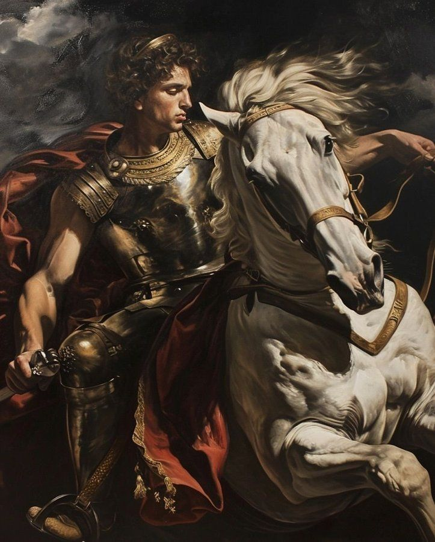
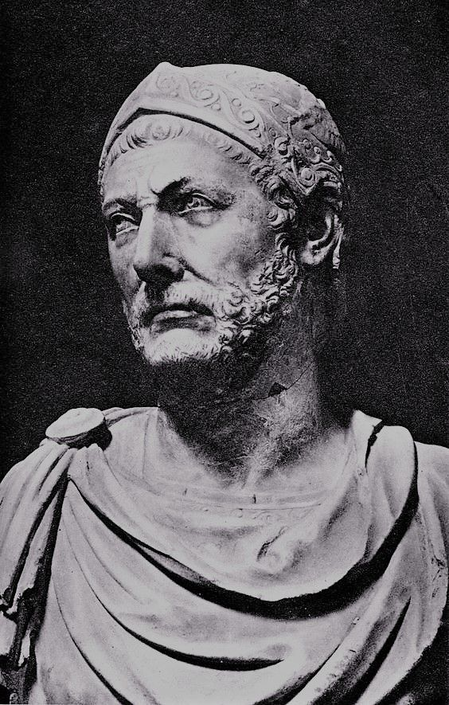
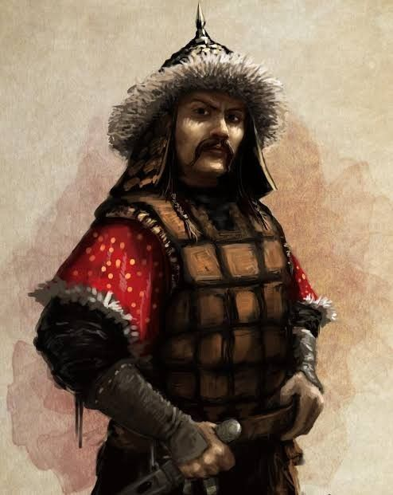
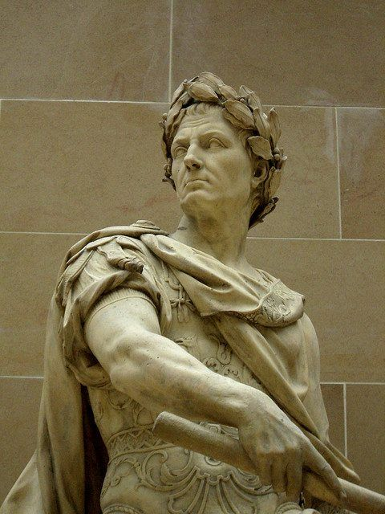
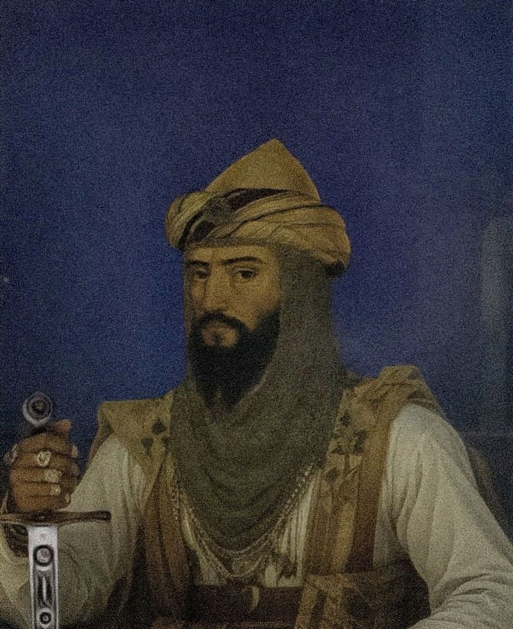
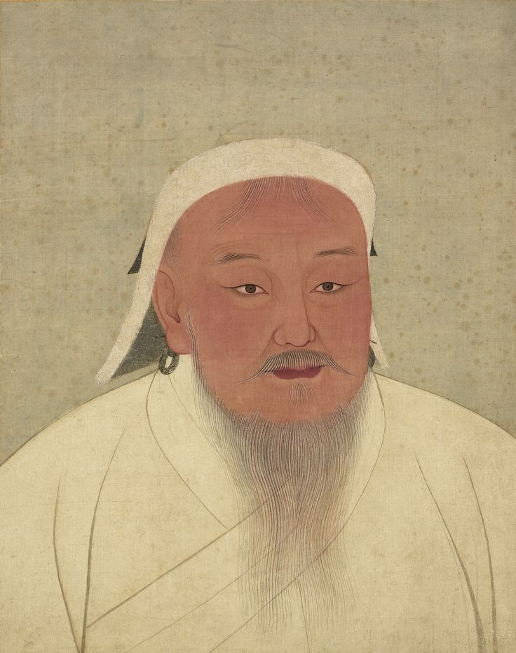
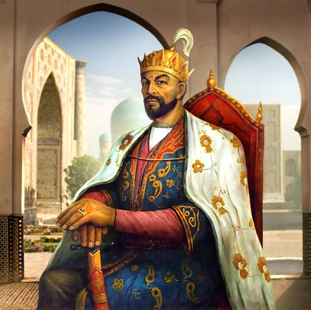
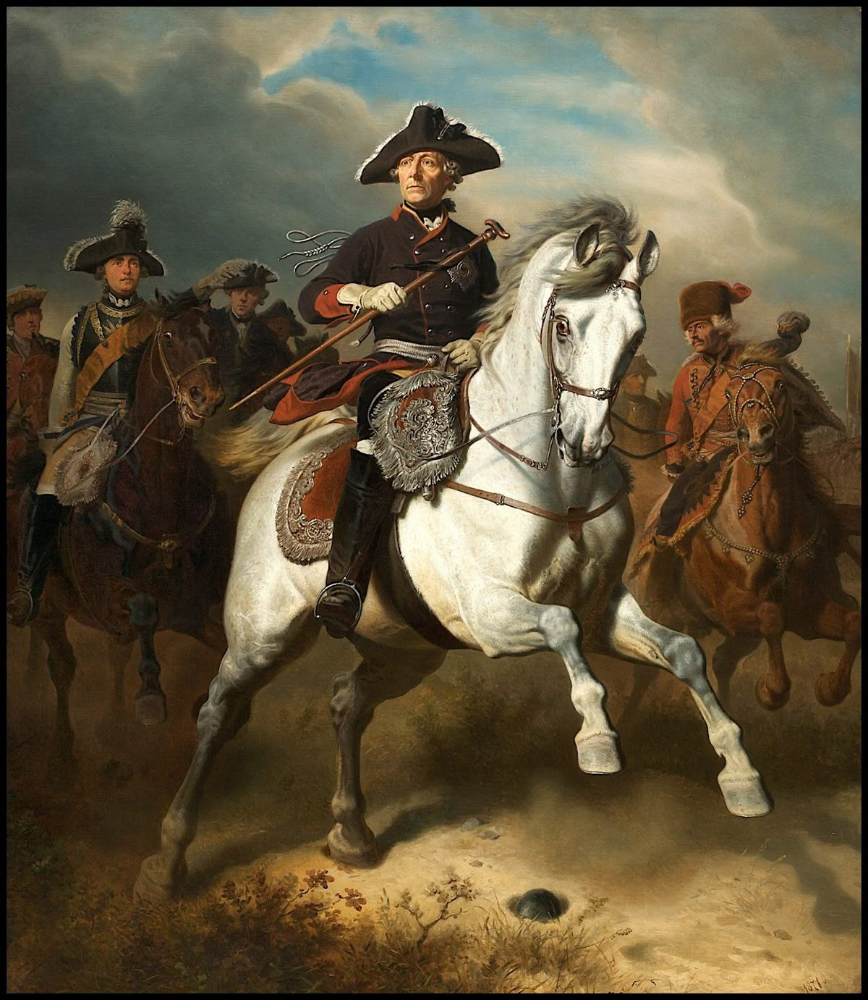
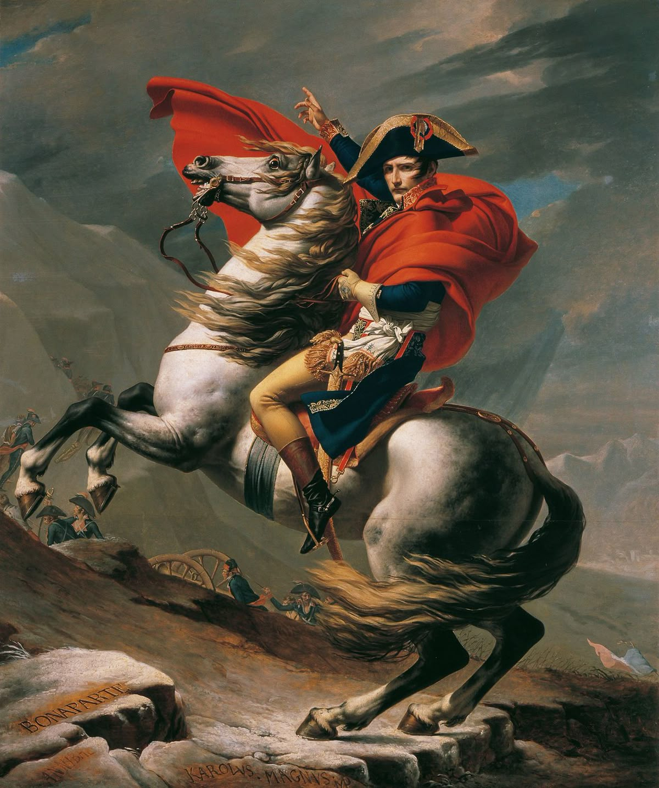
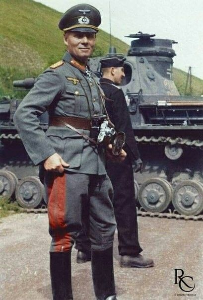

Giriş
Tarih boyunca birçok büyük askerî deha ortaya çıkmıştır. Bu dehalar, savaş stratejileri, taktikler ve liderlik becerileriyle tanınmışlardır. Bu yazıda, tarihin en büyük askerî dehalarından bazılarını inceleyeceğiz.

Büyük İskender Makedonya Kralı ve Fatih
Makedonya kralı olan Büyük İskender, kısa ömrüne rağmen Avrupa, Asya ve Afrika’yı kapsayan dev bir imparatorluk kurmuştur. Olağanüstü strateji yeteneği ve cesaretiyle tarihin en büyük fatihlerinden biri olarak kabul edilir. Granikos, Issos ve Gaugamela savaşları ile askeri dehasını kanıtlamıştır.
Detayları Gör
Hannibal Barca Kartaca’nın Büyük Komutanı
Hannibal Barca, Kartaca’yı Roma’ya karşı ünlü İkinci Pön Savaşları’nda temsil eden büyük bir komutandır. Özellikle İtalya’ya Alp dağlarını aşarak filiyle girişi ve stratejik manevralarıyla tarihe geçmiştir. Onun cesareti ve taktik dehası, Roma’yı yıllarca zorlu bir mücadeleye sürüklemiştir.
Detayları Gör
Mete Han Göktürk ve Hun Devleti Lideri
Mete Han, Hun İmparatorluğu’nun en ünlü liderlerinden biridir ve Çin ile Orta Asya’da büyük etki yaratmıştır. Ordusunu onluk sistem ile düzenleyerek modern bir askeri yapı kurmuş ve düşmanlarına karşı etkili savaş stratejileri geliştirmiştir. Cesareti ve liderliği sayesinde Hunları tarihin önemli güçlerinden biri hâline getirmiştir.
Detayları Gör
Julius Caesar Roma’nın Büyük Komutanı ve Diktator
Julius Caesar, Roma Cumhuriyeti’nin en ünlü liderlerinden biri olarak tarihe geçmiştir. Olağanüstü strateji ve politik zekâsıyla Roma’yı genişletmiş, Galya Seferleri ile büyük bir askeri başarı elde etmiştir. Cesareti, disiplinli ordusu ve taktiksel dehası sayesinde Roma tarihinin en etkili komutanlarından biri olmuştur.
Detayları Gör
Selahaddin Eyyubi Kudüs Fatihi ve Müslüman Dünyasının Komutanı
Selahaddin Eyyubi, İslam dünyasının en ünlü liderlerinden biridir ve Haçlılara karşı etkili bir savunma stratejisi geliştirmiştir. Kudüs’ü fethederek bölgedeki siyasi ve askeri gücünü pekiştirmiş, disiplinli ordusu ve taktiksel dehası ile tarihe geçmiştir. Cesareti ve adalet anlayışı, onu hem asker hem de lider olarak efsaneleştirmiştir.
Detayları Gör
Cengiz Han Moğol İmparatoru ve Büyük Fatih
Cengiz Han, Moğol İmparatorluğu’nun kurucusu ve tarihin en etkili askeri liderlerinden biridir. Disiplinli ordusu ve yenilikçi savaş taktikleri sayesinde Asya’nın büyük kısmını fethetmiş, farklı kabileleri birleştirerek dev bir imparatorluk oluşturmuştur. Cesareti, stratejik zekâsı ve sert liderliği, Moğol ordusunu tarihin en güçlü güçlerinden biri hâline getirmiştir.
Detayları Gör
Timur Orta Asya Fatihi ve Komutan
Timur, Orta Asya’da büyük bir imparatorluk kuran ve savaş stratejileriyle tanınan ünlü bir komutandır. Ordusunu disiplinli bir şekilde yönetmiş, hızlı ve sert taktikleriyle düşmanlarını alt etmiştir. Cesareti ve askeri dehası sayesinde hem doğuda hem batıda geniş topraklar fethederek tarihe adını altın harflerle yazdırmıştır.
Detayları Gör
Frederick the Great Prusya'nın Büyük Kralı
Büyük Friedrich, Prusya’yı Avrupa’nın güçlü bir devletine dönüştüren ve askeri stratejileriyle tarihe geçen bir liderdir. Ordusunu disiplinli bir şekilde yönetmiş, hızlı manevralar ve zekice taktiklerle savaşı kazanmasını bilmiştir. Cesareti, kararlılığı ve stratejik zekâsı sayesinde Avrupa tarihinin en etkili komutanlarından biri olmuştur.
Detayları Gör
Napolyon Bonapart Fransa’nın Büyük Askeri Lideri
Napolyon Bonapart, Fransa’yı dev bir imparatorluğa dönüştüren ve savaş stratejileriyle tarihe geçen ünlü bir liderdir. Disiplinli ordusu ve hızlı taktikleri sayesinde Avrupa’daki birçok savaşı kazanmış, stratejik zekâsı ile düşmanlarını alt etmiştir. Cesareti ve kararlılığı, onu hem asker hem de devlet adamı olarak efsaneleştirmiştir.
Detayları Gör
Erwin Rommel Alman Mareşali ve Çöl Tilkisi
Erwin Rommel, II. Dünya Savaşı sırasında Alman ordusunun en başarılı komutanlarından biri olarak tanınır. Hızlı taktikleri, yenilikçi manevraları ve disiplinli yönetimi sayesinde Kuzey Afrika’daki çarpışmalarda düşmanlarını zorlamış, “Çöl Tilkisi” lakabını kazanmıştır. Cesareti ve askeri dehası, onu modern savaş tarihinin unutulmaz figürlerinden biri yapmıştır.
Detayları Gör